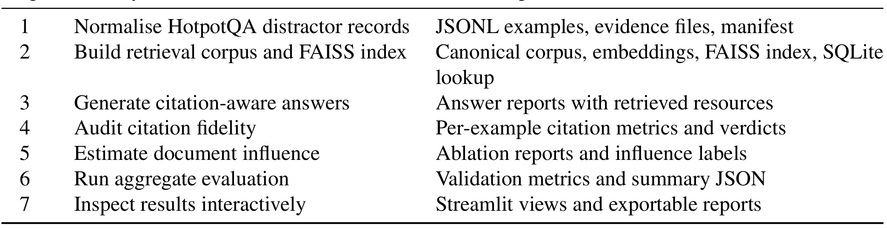
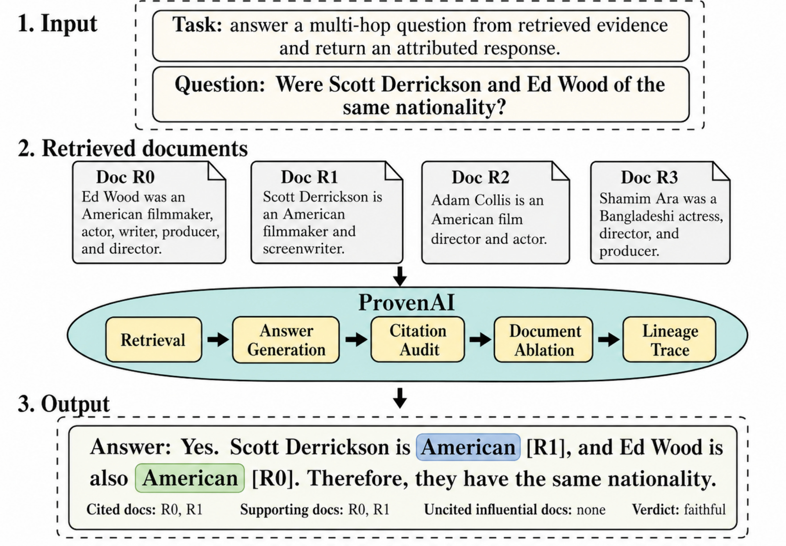
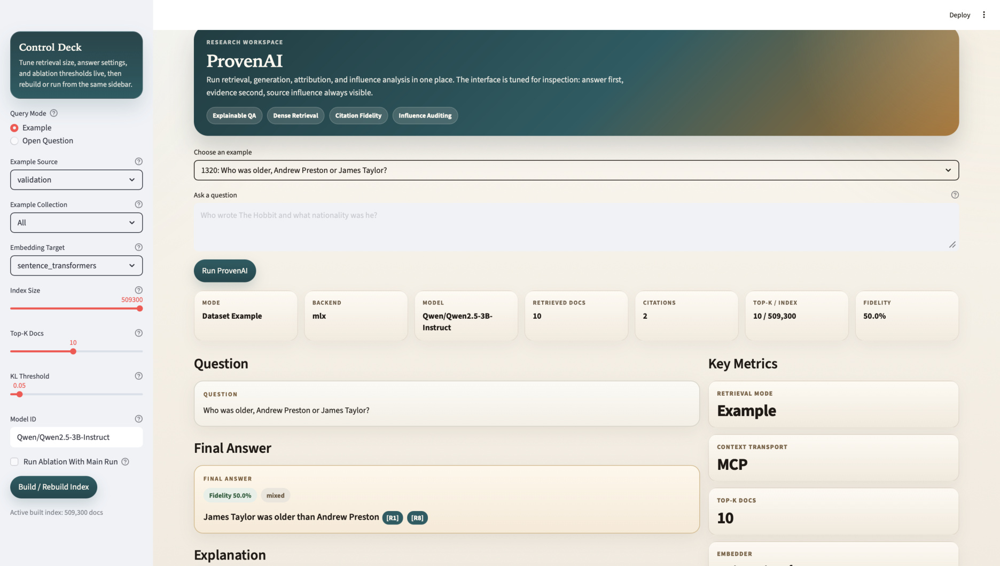
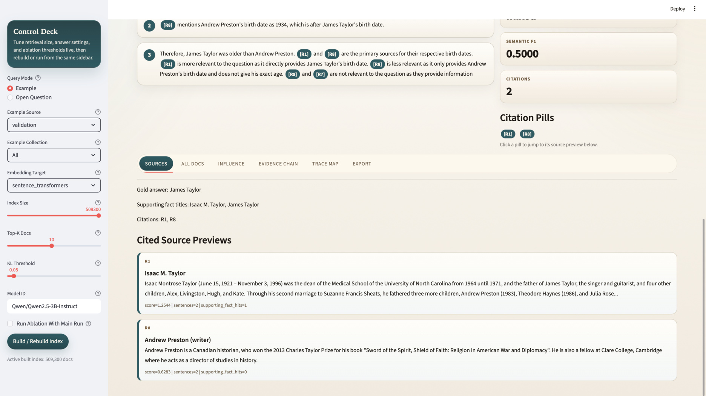
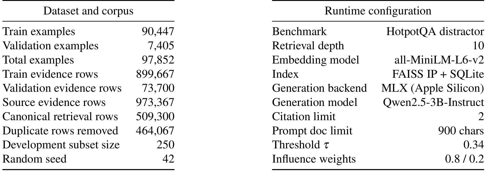
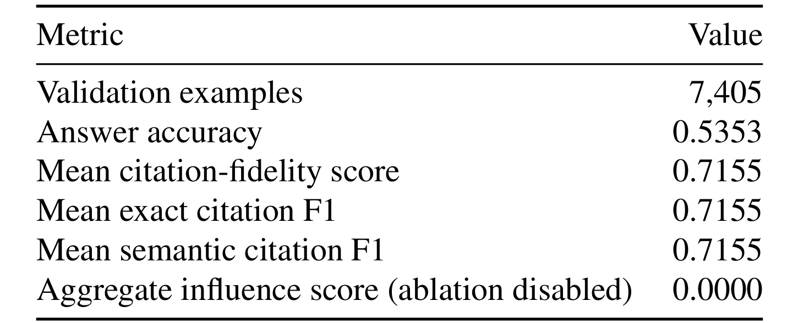
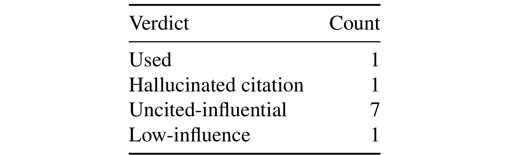
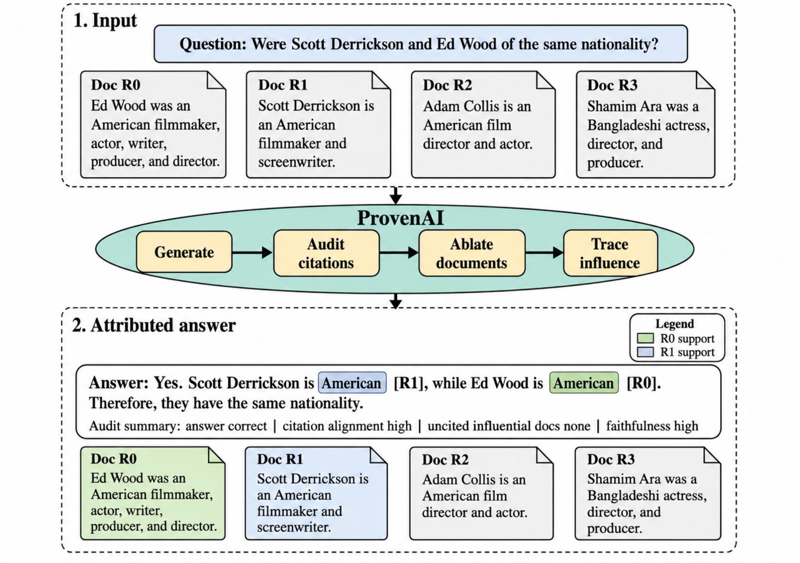
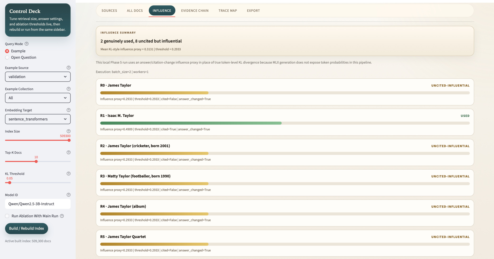

ProvenAI 这篇论文来自 Mohammad Faizan 和 Dalal Alharthi，两位作者在 PDF 首页标注的机构都是 University of Arizona。它不是提出一个更强的问答模型，而是把 RAG 和多跳问答里的“证据透明度”拆成可测量、可保存、可复查的流水线。论文入口链接：arXiv:2606.26449。代码或项目页方面，本轮没有核验到独立公开仓库；论文附录给出了代表性复现实验命令和报告路径，但这些路径是作者仓库内部结构说明，不等价于已公开代码链接。
RAG 系统即使在答案旁边列出引用，也不能证明这些被引用来源真的塑造了输出；一个文档可能被引用却几乎没有影响，另一个未被引用的检索文档却可能改变答案或引用集合。ProvenAI 要解决的核心问题，是把“答案是否正确”“引用是否对齐支持证据”“每个检索资源是否真实影响输出”拆成三个独立层面来追踪。
1. 背景和问题
RAG 最常见的透明度包装是 citation：模型回答时在句尾挂上几个来源编号，界面再把编号映射到检索文档。这个包装对用户很友好，却容易把三个不同问题混在一起。第一，答案是否正确，取决于模型最终字符串是否匹配 gold answer；第二，引用是否忠实，取决于 citation titles 是否对应任务标注的 supporting titles；第三，检索文档是否真的影响了输出，取决于把某个文档从上下文里拿掉以后，答案或引用集合是否变化。ProvenAI 的出发点是：这三个问题都重要，但任意一个都不能替代另外两个。
多跳问答把这个问题放大了。HotpotQA distractor 这样的任务要求模型跨两个或更多文档串联证据，检索阶段还会混入 distractor passages。模型可能引用正确标题，却在最终答案里算错、格式错或没有按评测规范输出；也可能答案碰巧正确，但引用集合没有覆盖真正支持事实；还可能出现本文最关心的第三类情况：引用审计看起来干净，但实际生成对一批未引用文档很敏感。对搜索、企业知识库、推荐解释和 Agent 审计来说，第三类情况尤其麻烦，因为用户看到的是“模型声称用了什么”，系统风险却来自“模型实际上被什么改变”。
论文把这个现象称为 citation-influence gap。它与普通 hallucination 不完全相同。普通 hallucination 更关注答案内容有没有事实错误，citation-influence gap 关注的是证据路径有没有被正确暴露。一个答案可以正确、引用也能匹配 supporting facts，但如果未引用的 co-retrieved passages 在消融后会改变输出，那么这条回答的可解释链路仍然不完整。反过来，一个被引用来源如果移除后输出几乎不变，就说明 citation 可能只是模型生成的表面标签，而不是行为层面的必要证据。
这篇论文的价值在于把这种风险变成一组工件，而不是停留在“引用可能不可靠”的经验判断。它建立七阶段流水线：先把 HotpotQA 数据转为稳定本地记录，构建 FAISS 检索索引，再生成带 citation tags 的答案，随后做 citation fidelity 审计、leave-one-resource-out 影响估计、批量聚合评估和交互式检查。每个阶段都保存 JSONL、报告、索引、SQLite 或 dashboard 可读记录，让后续审计者能追问每个资源如何进入上下文、是否被引用、是否影响输出。
从推荐系统视角看，ProvenAI 也有迁移意义。推荐解释经常把“为什么推荐这个内容”写成标签、相似内容或用户兴趣点，但解释是否真的影响排序/生成，往往没有被独立验证。ProvenAI 的分层思路提醒我们：解释项、候选来源、实际影响特征可能是三套集合。若把它移植到搜索推荐一体化或内容生成推荐中，需要分别记录候选进入链路、解释展示链路和模型敏感性链路，而不是把展示给用户的理由当作真实因果路径。
这也解释了论文为什么强调 provenance-native traces，而不是事后加一个 citation checker。事后检查只能告诉我们输出文本里哪些引用看起来对齐，不能恢复被模型读过但没有展示的资源影响。ProvenAI 把 retrieval manifest、citation manifest、verdict assignment 和交互式 trace 放进同一套报告，目标是让审计发生在执行轨迹上，而不是在答案发布后再补一层说明。
2. 方法
2.1 三层透明度：答案、引用和资源影响分开测量
论文在 Problem Formulation 中先定义问题 q、检索资源集合 R = {r1,...,rk}、生成答案 a、引用集合 C，以及数据集给出的 gold answer a* 和 supporting document titles G。这个形式化的关键不是符号复杂，而是把评估对象拆开：answer correctness 检查 a 和 a*；citation fidelity 检查 C 和 G；resource influence 检查移除 ri 后 a 或 C 是否变化。ProvenAI 的核心机制，就是不允许 citation fidelity 被当成 transparency 的唯一代理。
Citation fidelity 用 document-title level 的 token-set Jaccard similarity 来做。若 TC 是 cited titles，TG 是 gold supporting titles，系统先计算每个 cited title 到最近 supporting title 的相似度，再根据阈值 τ 形成 precision、recall 和 F1：
符号解释：TC 是模型引用的标题集合，TG 是 HotpotQA 标注的支持标题集合，sim 是标题 token 集合的 Jaccard 相似度，τ 是匹配阈值，Pτ、Rτ、Fτ 分别是引用标题相对 gold 标题的精确率、召回率和 F1。这里的好处是简单、可批量跑；边界也很明确：它只能说明标题层面对齐，不能证明具体句子蕴含了答案。
2.2 从 KL 目标到表层代理：为什么这是单向可靠信号
资源影响的理想目标是分布级别的干预量。对于每个 ri，系统比较完整上下文 R 下的输出分布，和把 ri 从 R 中移除后的输出分布：
符号解释：ri 是第 i 个检索资源，p(·|q,R) 是完整上下文下的生成分布，p(·|q,R\{ri}) 是删除该资源后的生成分布，DKL 衡量两个分布的差异。这个式子对应 do-calculus 的 leave-one-resource-out intervention：不是问模型有没有引用 ri，而是问如果 ri 不在上下文中，输出分布是否改变。
现实限制是，本文的本地 MLX 推理路径没有暴露 per-token probabilities，无法直接计算 InfluenceKL。因此 ProvenAI 用 regenerated samples 的表层差异代理分布影响：
符号解释：a-i 和 C-i 是移除 ri 后重新生成的答案和引用集合，Δa 表示答案 token 集合变化，Δc 表示引用集合变化，φ 是最终 influence proxy。0.8/0.2 的权重体现了作者对答案变化更可靠、引用变化作为补充信号的判断。这个代理不是“无影响证明器”；它只在观察到答案或引用变化时给出影响证据，无法捕捉概率质量变化但最终字符串不变的情形。
论文用 Proposition 1 给这个代理一个单向 faithfulness bound：
符号解释：pt* 和 p't* 是完整上下文与删除资源后的下一 token 分布，t* 是 greedy decoding 第一次分歧的位置，ε 表示完整上下文下最大概率 token 的置信度缺口。若 Δa(ri)>0，在近确定性解码下第一次字符串分歧能见证严格正的 KL gap；但反向不成立，因为两个分布可以发生 KL 变化而 argmax token 不变。这段证明让 φ 的语义更谨慎：positive proxy 是影响证据，low proxy 不是无影响证明。
2.3 Verdict assignment 与七阶段流水线
有了 citation indicator 和 φ(ri)，ProvenAI 给每个检索资源分配四类 verdict。阈值不是全局固定，而是每个样本自适应：
符号解释：θ 是该样本内部的影响阈值，median({φ(ri)}) 防止只因样本整体尺度变化导致标签失真，θfloor 防止所有代理值接近零时出现退化。若 ri 被引用且 φ(ri)≥θ，标签是 USED；被引用但 φ(ri)<θ 是 HALLUCINATED CITATION；未被引用但 φ(ri)≥θ 是 UNCITED INFLUENTIAL；未被引用且 φ(ri)<θ 是 LOW INFLUENCE。对角线标签表示引用和影响一致，非对角线标签就是 citation-influence gap 的可操作形态。

这张清单展示了 ProvenAI 的七个阶段和对应保存物。第 1 阶段把 HotpotQA distractor records 归一化为 JSONL examples、evidence files 和 manifest；第 2 阶段构建 canonical corpus、embeddings、FAISS index 和 SQLite lookup；第 3 阶段生成带 retrieved resources 的 answer reports；第 4 阶段审计每个样本的 citation metrics 和 verdicts；第 5 阶段输出 ablation reports 和 influence labels；第 6 阶段汇总 validation metrics；第 7 阶段把结果放进 Streamlit views 和 exportable reports。它说明 ProvenAI 的“provenance-native”不是一句口号，而是每一步都产生下游可读、可复跑的工件。这里也能看到一个工程取舍：系统把审计链路做得很清楚，但要付出比普通 RAG 推理更多的存储和重复推理成本，尤其是第 5 阶段。

这张图把一条多跳问答样例放进完整信息流：输入是问题和四个 retrieved documents，ProvenAI 中间经过 retrieval、answer generation、citation audit、document ablation 和 lineage trace，输出是带 R0/R1 引用的答案，以及 cited docs、supporting docs、uncited influential docs 和 verdict。图中最重要的细节是，答案里显示的 citation set 只是输出层的一部分；同一条路径里还保留 retrieved documents 和 lineage trace，因此系统可以追问“未显示给用户的文档是否也在影响答案”。这正是论文与普通 citation-aware prompting 的差别：它把引用变成被审计对象，而不是把引用当成审计终点。
2.4 交互式检查与 MCP trace
ProvenAI 的 inspection layer 不是附属界面，而是方法的一部分。论文附录说明，本地 MCP server 暴露 get_example、get_supporting_facts、search_hotpotqa、get_evidence_document、get_trace_session_status 和 get_trace_graph 等操作，并记录 JSON-RPC 请求、返回资源、稳定 resource identifiers 和 trace graphs。MCP 在这里的作用不是提高模型能力，而是把 retrieval-time resource access 变成可追踪接口：每个被检索、被引用、被审计的资源都能回到一个结构化调用记录。

控制台截图显示，用户可以在同一个界面里看到 query mode、example source、embedding target、index size、Top-K docs、KL threshold、model ID、retrieved docs、citations、fidelity 和最终答案。它对方法章有两层含义。第一，ProvenAI 的指标不是离线跑完后才手工复制到论文里的数字，而是来自可打开的 per-example 报告；第二，界面把 retrieval、generation 和 evaluation 的状态放在同一屏，便于发现“答案正确但引用差”“引用正确但影响扩散”这类分层故障。若要迁移到企业知识库，这类控制台可以成为审计台账，而不是只服务论文展示。

Evidence inspection view 展示了 cited source previews、supporting context、citation pills 和 gold answer 等字段。它补强的是 citation fidelity 的可解释性：如果 Fτ 只是一个数字，读者很难判断错在标题归一化、检索文档、citation parser 还是 supporting fact 标注；界面把 R1/R8 这类 cited source 和原文片段展开，能让人检查 title-level match 是否真的有语义支撑。不过也正因为它停在 source preview 层，论文才需要 resource influence 层。单靠这张视图仍然不能证明某个未引用资源没有参与塑造输出，必须配合消融视图才能覆盖行为影响。
3. 实验结果
3.1 数据、配置和可比性边界
实验使用 HotpotQA distractor validation split，而不是作者另造的小样本。论文报告了 7,405 个 validation examples，训练集 90,447 个 examples，总计 97,852 个 examples；源 evidence rows 为 973,367，去重后 canonical retrieval rows 为 509,300。运行配置包括 retrieval depth 10、all-MiniLM-L6-v2 embedding、FAISS inner product index 加 SQLite mirror、MLX Apple Silicon generation backend、Qwen2.5-3B-Instruct generation model、citation limit 2、prompt doc limit 900 chars、semantic attribution threshold τ=0.34 和 influence weights 0.8/0.2。

这张配置表要和结果一起读。509,300 canonical retrieval rows 说明作者不是只在 HotpotQA 标注 supporting facts 上做封闭审计，而是保留了大规模检索库；retrieval depth 10 意味着每个样本最多会有十个资源进入生成上下文，citation limit 2 则意味着输出 citation set 明显小于 retrieved set，这天然创造了“未引用但有影响”的观察空间。MLX + Qwen2.5-3B-Instruct 也限定了结论边界：这是本地稳定路径，不是 frontier model；准确率低于强模型并不奇怪，但论文关心的是三层指标是否分离，而非刷新 HotpotQA leaderboard。
3.2 聚合指标：正确率与引用忠实度分离
聚合结果是论文最直接的宏观证据。7,405 个 validation examples 上，answer accuracy 是 0.5353，mean citation-fidelity score 是 0.7155，mean exact citation F1 和 mean semantic citation F1 也都是 0.7155。这个 18 个百分点左右的差距说明模型经常能找到并引用正确 supporting titles，却没有生成 normalization-matched 的最终答案。论文解释中提到，可能原因包括数字问题的算术错误、yes/no 题格式不匹配、或者答案 paraphrase 与轻量字符串归一化不一致。

这张主结果表很克制，但足以支撑三层拆分的必要性。若只看 answer accuracy，用户会认为系统整体只有中等水平；若只看 citation fidelity，又会认为证据层已经较好。ProvenAI 的观点是二者不能相互替代：citation fidelity 高于 answer accuracy，说明有一部分样本 evidence layer 是对齐的，但 answer generation downstream 失败；反过来，论文也指出存在答案正确但 citation set 退化的样本，这对应 HALLUCINATED CITATION 的 population-level analog。需要特别注意的是，Aggregate influence score 为 0.0000 不是“资源没有影响”的结论，而是 full-batch run 关闭了 leave-one-resource-out ablation；因为 top-k=10 时每个样本需要约 k+1=11 次 forward passes，成本约增加一个数量级。
3.3 个案：citation-influence gap
论文用 Scott Derrickson 和 Ed Wood 是否同国籍的样例展示 gap。Gold answer 是 yes，模型也正确识别二者都是 American，并引用对应文档。citation audit 完美，exact 与 semantic matching 下 Fτ 都是 1.0。如果审计在这里停止，系统会被判为 fully transparent。可是 leave-one-resource-out report 显示，十个 retrieved documents 里只有一个 cited source 真正达到 USED，一个 cited source 低于影响阈值而变成 HALLUCINATED CITATION，另有七个 uncited sources 在移除时会改变答案或引用集合。

这张小表的意义很大：Used=1、Hallucinated citation=1、Uncited-influential=7、Low-influence=1。也就是说，引用集合和影响集合在这个样例上严重错位。一个 cited source 没有达到影响阈值，说明模型可能把它列为 citation，却不依赖它改变输出；七个 uncited-influential resources 则说明未出现在答案后的上下文也能稳定或改变模型输出。对 RAG 产品来说，这种错位意味着“答案旁边的两个来源”并不能完整代表模型接触到并受其影响的证据环境。对审计系统来说，这张表把错位变成了可计数对象，而不是主观怀疑。 表中 mean influence proxy 为 0.97，也提醒读者这里不是边缘噪声：在该样例里，资源删除带来的表层变化足够强，足以把 uncited documents 推到 influential 区间。

worked example 图把这个错位画得更直观。上半部分是问题和检索文档：R0 讲 Ed Wood，R1 讲 Scott Derrickson，R2/R3 是其他人物文档。中间流程经过 generate、audit citations、ablate documents 和 trace influence。下半部分答案正确引用 R1 和 R0，citation alignment 看起来 high，faithfulness 也 high，但图中的资源卡片显示系统仍然需要检查未引用文档的影响。这个例子没有证明 token-level causal dependence，因为当前代理只看答案和 citation set 的表层变化；但它足以说明 clean citation audit 与 diffuse influence 可以同时成立。论文把这件事连接到 irrelevant context distraction 和 context attribution 工作，合理之处在于它没有宣称 uncited documents 一定是语义必要证据，而是说它们在当前生成路径上产生了可观测敏感性。
3.4 交互界面对消融诊断的补强
Appendix 的 ablation view 进一步说明，ProvenAI 不是只在论文里列一个 case study，而是把每个 resource 的 influence proxy、阈值、answer_changed、citation_changed 和 verdict 暴露出来。这个设计对工程落地重要，因为很多 RAG 事故需要追查单个 query 的证据链，而不是只看批量指标。若用户质疑“为什么这个未引用文档算 influential”，审计者至少可以打开该资源对应的 ablation row，查看它的 proxy 分数和输出变化，而不是只引用一个全局平均数。

这张界面图展示了 influence tab：顶部有 influence summary，例如 genuinely used 和 uncited but influential 的数量；每个资源下面有横向条形分数、阈值比较、cited 标记和 answer_changed 状态。它说明 ProvenAI 的 verdict 可以服务人机协同审查：机器先做 leave-one-resource-out 标注，审计者再检查具体资源文本和答案变化。局限也同样明显：如果本地后端不给 token probabilities，界面里的 influence proxy 仍是表层代理，不能替代分布级 InfluenceKL；如果随机解码或提示模板改变，answer/citation change 也可能变化。因此这张图最适合作为“诊断入口”，而不是最终因果证明。
整体实验结果支持论文的核心论点，但还不能支持更强结论。第一，主结果证明 citation fidelity 与 answer accuracy 分离，但 influence layer 只在 targeted reports 里展示，full validation 没有跑全量 ablation。第二，HotpotQA distractor 是有 gold supporting titles 的 benchmark，企业知识库和开放域搜索往往没有同等干净的 supporting facts。第三，title-level Jaccard 对齐容易批量化，但它不能验证句子级 entailment，也不能判断引用片段是否支持具体 claim。第四，3B 本地模型的错误类型可能和更大模型不同，citation-influence gap 的比例需要在 7B/8B 或更强模型上重新估计。
4. 总结
4.1 我的判断
ProvenAI 最值得保留的不是某个绝对指标，而是三层透明度的工程结构：answer correctness、citation fidelity、resource influence 各自独立测量，并且每个阶段保存可复查工件。这个结构对 RAG、搜索推荐解释、企业知识库审计和 Agent 工具调用都很有用。它提醒我们，给用户看的 citation 或 explanation 只是表层承诺；真正的系统透明度要能追踪候选资源如何进入上下文、哪些资源被模型声称使用、哪些资源在行为上改变输出。
4.2 工程迁移
如果把 ProvenAI 思路用于推荐或搜索系统，我会优先做三件事。第一，在候选召回和生成解释之间加入 manifest，记录每个内容、文档或特征进入上下文的稳定标识。第二，区分展示解释和影响解释：展示给用户的理由要和模型敏感性测试分开存储，避免把 UI 解释误当因果解释。第三，对高风险 query 或高价值推荐场景做局部消融，而不是全量在线请求都跑 k+1 次推理；可以按置信度异常、引用不稳定、用户申诉或安全策略触发审计。
4.3 局限与后续跟进
这篇论文的主要局限有四点。第一，当前 influence proxy 是 answer/citation surface shift，无法捕捉字符串不变但 token distribution 改变的情况。第二，full validation 没有启用 ablation，因此 influence gap 的总体比例仍然缺少完整统计。第三，citation fidelity 只到 document-title level，不能替代 sentence-level entailment 或 claim-level factuality。第四，模型和 benchmark 范围有限，Qwen2.5-3B-Instruct 在 HotpotQA distractor 上的表现不能代表更强 RAG 系统。
后续我会跟三条线。第一，看作者是否公开仓库和全量 ablation reports，因为这决定 ProvenAI 能否从论文框架变成可复现工具。第二，关注它是否接入能输出 token probabilities 的后端，从 φ proxy 走向 InfluenceKL 或 ContextCite/SelfCite 式概率感知估计。第三，关注它能否迁移到没有 gold supporting titles 的开放域 RAG：如果没有 TG，citation fidelity 必须改成 claim-evidence entailment、人工标注或模型辅助裁判，整个审计口径会更复杂。